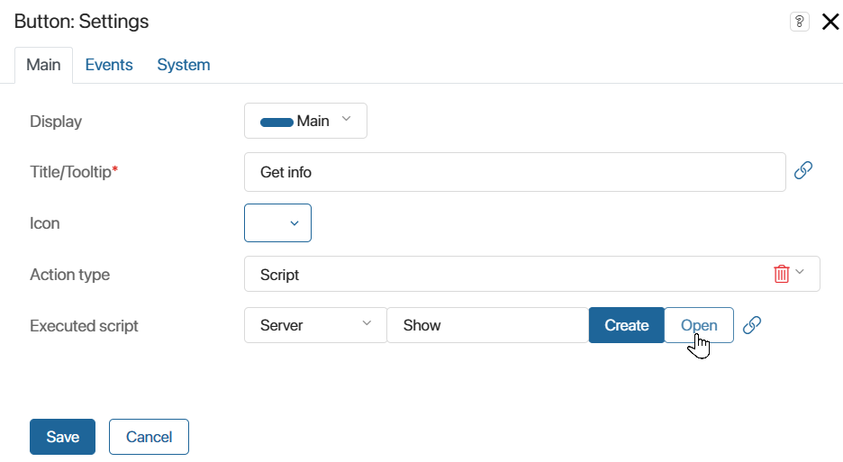

In a custom module, you can configure the connection of a web service that uses SOAP (Simple Object Access Protocol) to exchange data with BRIX.
The web service will act as a connector point. In the module, the .xml file of the specification of a particular web service is uploaded. This will allow you to access its description language (WSDL). You will then be able to access the methods and data types of the web service in server scripts and use them to implement certain logic in BRIX.
For example, in the module, you can configure integration with a web service that provides country data by its ISO code. To use the service methods, you can create a widget and add a server script to it. The user will be able to specify the ISO code of the country in the widget and send a request to the web service. The received country data will be sent to BRIX and displayed in the widget. Then the widget can be placed on any pages and forms of the system apps and receive information from the web service.
To configure integration, an external service is created in the custom module.
Only system administrators can add external services to modules.
Create an external service in a module
To connect a web service to BRIX, follow the steps below:
- Go to the Administration > Modules workspace and select the created custom module.
- On the module page, click Settings and go to the External Services tab.
- Fill in the connection details:

- Name*. Specify the name of the external service.
- Unique name*. Specify the name that will be used in scripts to access the external service. It must be unique.
- Specification URL. Enter the URL where the .xml table with the service description language (WSDL) is available. To upload the specification to the system, click the icon to the right of the field. A specification file will then be generated and displayed in the field.
- Specification file*. An .xml file of the web service specification is uploaded to the field. If you entered a URL in the previous field, the file will be displayed automatically.
- SOAP service, SOAP port. The fields are filled in automatically from the data in the downloaded .xml file of the web service specification. The data is used to debug the interaction with the web service. If multiple SOAP ports are displayed in the field, select the desired one by referring to the web service documentation.
- Basic URL. Specify the URL of the web service. If the field is not filled in, the address from the downloaded .xml specification file is used by default.
- Authentication. Select an option to authenticate the web service:
- None.
- Basic. Login and password are used for authentication.
- With Token. A token is required for authentication.
To specify a login and password or token, click the key icon to the right of the field. Please note that when exporting the module, the data is transmitted in an unencrypted form.
To encrypt sensitive data, we recommend using template variables, i.e., parameters created in the module settings. To do this, click the {+} icon in the right part of the field, select the added parameter, and save the settings.
For example, on the Module Settings page, you can create the Token parameter of the String type. Then, when adding an external service, specify the variable in the authentication rule. Then in the settings of the enabled module, the token can be added, changed, or deleted.
- Click Create.
- A window with full settings of the external service will open. To provide access to the service, click Save and Publish in the top panel.
Now you can use the available methods of the web service described in its documentation.
The methods can only be accessed in server scripts that are processed on the BRIX server.
For convenience, you can add scripts within an existing module, for example, in custom widgets or activities in business processes. Created components with server scripts can be applied in any BRIX workspace but are executed only when the custom module is enabled.
Example of using external service methods
Let’s consider the use of an external service in the module on the example of a configured integration with a web service that provides data about a country by its ISO code. You can read and use the service description language (WSDL) at the URL specification.
In the module, we will create and customize a widget where the user specifies the ISO code of the country and clicks the button to run the script. The script uses a method from a web service. After the request is processed, the widget in BRIX displays full information about the country: name, capital city, phone and currency code, national languages, and flag.
To allow users to use the widget, let’s place it on a separate page added to a system workspace.
Let’s see how to configure such functionality.
Step 1. Create a widget in the module and configure its context
- Go to the custom module settings and open the Widgets tab.
- Click +Widget, specify a name for the widget, for example, Country information, and click Create. The interface designer will open.
- Create context variables that are placed on the modeling canvas and used to exchange data between BRIX and the web service. To do this, click the Context tab and add properties:

- ISO country code (
isocode). It is a variable of the String (string) type. In the widget, employees will use this field to specify the ISO code of the country. - Country information (
countryinfo). It is a variable with of the String (text) type. After processing a request to the web service, this field will display full information about the country. - Country flag (
flag). It is a variable of the Image (one) type. This field will display the flag image obtained from the link to it in the response from the web service.
Step 2. Place properties on the widget form
Add properties to the widget so that users can specify the ISO code of a country and view information about it resulting from processing a request to the web service. To do this:
- Click the Template tab and in the right sidebar, click Properties.
- Drag and drop the created variables onto the modeling canvas.
- For the properties that display the query result, i.e., Country information and Country flag, we recommend that you enable the Read only option so that users cannot modify the resulting values.
Step 3. Configure the server script
Write a server script that will handle the method from the web service, and configure it to run. To do this:
- In the designer sidebar, click Widgets, find the Button widget and drag it to the modeling canvas, for example, place the button under the ISO country code string.
- In the window that opens, customize the display of the button and set its name, for example, Get info.
- In the Executed script field, select the Server option to add a script that is processed on the BRIX server. Click Create and specify the name of the script that will be run when the button is clicked, for example, Show.

- Click the Open button that appears in the field to go to the Scripts tab and write the script:
async function Show(): Promise<void> {
Context.data.countryinfo = '';
Context.data.flag = undefined;
if (!Context.data.isocode) {
return;
}
const mysCountryISOCode = Context.data.isocode;
try {
// Access to an external service created in the module
const countryinfoservice = Namespace.ws?.countryinfoservice();
if (countryinfoservice) {
// Call the method to retrieve complete country information from an external service
const result = await countryinfoservice.FullCountryInfo({
sCountryISOCode: mysCountryISOCode
});
if (result && result.data && result.data.FullCountryInfoResult) {
const countryInfo = result.data.FullCountryInfoResult;
// Check if languages and their properties are available before displaying them
const languages = countryInfo.Languages?.tLanguage
? countryInfo.Languages.tLanguage
.filter(lang => lang.sName && lang.sISOCode)
// Filter the result to include only those languages for which the service has a country name and ISO code
.map(lang => `${lang.sName} (${lang.sISOCode})`)
.join(", ")
: "Information on languages is not available";
// Generate the formatted result
const formattedResult = `
Full country information with ISO Code "${mysCountryISOCode}":
Name: ${countryInfo.sName}
Country code: ${countryInfo.sISOCode}
Capital: ${countryInfo.sCapitalCity}
Phone code: +${countryInfo.sPhoneCode}
Continent: ${countryInfo.sContinentCode}
Currency code: ${countryInfo.sCurrencyISOCode}
Country flag: ${countryInfo.sCountryFlag}
Languages: ${languages}
`;
Context.data.countryinfo += formattedResult;
// Upload flag image using the link received from the service
const newFlag = await Context.fields.flag.createFromLink(`flagOf${mysCountryISOCode}.jpg`, countryInfo.sCountryFlag!);
Context.data.flag = newFlag;
}
}
} catch (error) {
}
}
Step 4. Publish the customized widget
After customization, the widget in the interface designer may look like this:

To make it available for use, click Save and Publish in the top panel of the interface designer.
Step 5. Add the widget to a page
Once the widget is published, it can be placed on the system app pages and forms. To do this:
- Make sure that the custom module in which the widget is created is enabled.
- Go to any workspace and create a new page.
- Open the page in the interface designer.
- On the Template tab, in the list of widgets, find the Country information widget created in the module and drag it to the modeling canvas.
- Save and publish the page.
On the ready page with the widget, users will be able to enter standardized ISO codes of countries and get full information about them from the web service.
Found a typo? Select it and press Ctrl+Enter to send us feedback